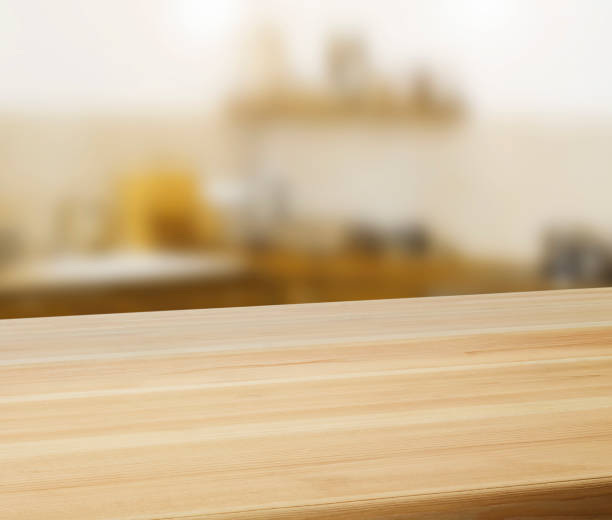
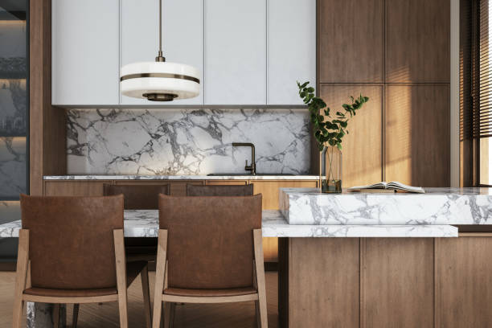

USA - Nationwide
info@ohmykitchen.pro
USA - Nationwide
info@ohmykitchen.pro

Discover the beauty and resilience of quartz countertops. Our skilled team delivers flawless installation tailored to your unique style.
Discover the beauty and functionality of quartz countertops, meticulously installed for a luxurious touch. Upgrade your space in Usa - Nationwide with our expert services!
Residential & commercial Countertops
Quality services at affordable prices
Immediate 24/ 7 emergency services


When it comes to durability and timeless beauty, granite countertops stand unmatched. Granite is a natural stone that not only enhances the aesthetic appeal of your kitchen or bathroom but also ensures longevity and resilience against wear and tear. In Usa - Nationwide, our granite countertop installation service provides a seamless blend of functionality and style, making it a top choice for homeowners looking to elevate their spaces.
Choosing our services means partnering with experts who have extensive experience in granite countertop installation. Our team understands the nuances of working with natural stone, ensuring precision in every cut and placement. We source high-quality granite slabs from trusted suppliers to guarantee that you receive only the best material for your home. Each installation is customized to fit your unique kitchen or bathroom layout, reflecting your personal style and preferences.
Moreover, our commitment to customer satisfaction ensures that we guide you through the entire process, from selecting the right granite to the final installation. With us, you not only get a beautiful granite countertop but also a reliable and stress-free experience.

Marble countertops exude luxury and sophistication, making them a timeless choice for upscale kitchens and bathrooms. The natural beauty of marble adds an elegant touch while providing excellent durability and heat resistance. Our marble countertop installation services in Usa - Nationwide are tailored to create stunning surfaces that not only enhance aesthetic appeal but also serve every practical need.
We understand that each slab of marble is unique, and that's why we work closely with our clients to ensure that they receive a product that reflects their personality and taste. Our skilled craftsmen handle the installation process with precision, ensuring that the natural veining of the marble is showcased beautifully in your space.
Why choose us? We stand out due to our high-quality craftsmanship and excellent customer support. Our team is well-versed in handling various types of marble and is committed to meticulous attention to detail. Our extensive experience in the Usa - Nationwide area means we know the local styles and trends that resonate with our community, ensuring your new marble countertops integrate harmoniously into your home.

Butcher block countertops provide a warm, inviting aesthetic while offering functionality and robustness. Ideal for kitchens and entertainment areas, they are perfect for cooking enthusiasts and families alike. Our butcher block countertop installation services combine the traditional charm with modern performance, making us your ideal partner for this type of project.
Why are we the best at what we do? Our team specializes in various types of wood and finishes, allowing you complete customization of your butcher block countertops. We understand that installation quality is crucial for durability, which is why we use the finest techniques and products. We also offer guidance on care and maintenance to extend the life of your countertops. Choose us for your butcher block installation, and experience the perfect blend of beauty, functionality, and craftsmanship!

Laminate countertops are an excellent choice for homeowners and businesses looking for stylish yet budget-friendly options. Our laminate countertop installation service offers an extensive selection of designs and finishes, making it easy to find the perfect match for your needs. Laminate is not only affordable, but it also mimics the look of more expensive materials like granite or marble, giving you stylish options without breaking the bank.
When you choose us for your laminate countertop installation, you can expect professional service and expert guidance throughout the process. Our team understands the importance of quality installation, ensuring that your new countertops are not only beautiful but also durable. We carefully manage every step, from material selection to final installation, to deliver results that exceed your expectations. Choose our laminate countertop services for a perfect balance of style, functionality, and cost-effectiveness.

Discover the seamless beauty of solid surface countertops with our expert installation services . Solid surface materials like Corian and LG Hi-Macs are designed to provide a modern, cohesive look in any kitchen or bathroom. Their non-porous nature makes them easy to clean and maintain, while also offering endless customization options.
Our team specializes in solid surface countertop installation, guaranteeing a perfect fit and impeccable craftsmanship. The flexibility of solid surface materials means we can create custom shapes and sizes to suit your needs, including integrated sinks and backsplashes that enhance the overall design.
We pride ourselves on our customer-centered approach, guiding you through the selection process to find the ideal style and color that complements your home. Not only do our solid surface countertops offer exceptional design possibilities, but they’re also durable and built to last. With proper care, they’ll maintain their beauty for years, making them a smart investment for your home.

Concrete countertops are a bold choice, offering an industrial style that can be beautifully customized. Whether you're looking for a sleek, modern aesthetic or a rustic charm, our concrete countertop installation services can deliver a product tailored to your specific vision.
Why should you work with us on your concrete project? Our experts are skilled in creating stunning, bespoke concrete countertops. We focus on quality and detail, ensuring that each piece meets the highest standards. Our team provides advice on color, texture, and finish options to ensure your countertops align perfectly with your home's decor. Choosing us means investing in a unique and long-lasting feature for your space—let us bring your concrete countertop dreams to life!

Opt for sustainability without sacrificing style with our recycled glass countertops. Our installation service offers a unique blend of beauty and eco-friendliness. Recycled glass countertops are made from a mix of recycled glass and resin, creating a stunning surface available in many colors and patterns, while contributing positively to the environment.
Choosing our company means choosing an environmentally responsible approach to your countertops. We are committed to providing high-quality craftsmanship and materials that align with your eco-friendly values. Our knowledgeable team will guide you through the selection process, ensuring you select a countertop that reflects your aesthetic while incorporating sustainable practices. Transform your home or business with the beauty and sustainability of recycled glass countertops from Usa - Nationwide.

Custom countertops allow you to create a truly one-of-a-kind feature in your kitchen or bathroom. Our custom countertop design and fabrication services are tailored to your specific needs, ensuring that your vision is realized down to the finest detail.
Why are we the best choice for custom countertops? We offer a collaborative design process, where our experienced designers and skilled fabricators work closely with you to bring your ideas to life. We utilize the latest technology and highest quality materials to ensure your countertops are not only beautiful but also durable. With us, you will have personalized support throughout the project, guaranteeing satisfaction with the final result. Create a space that reflects your unique style with our customized countertop solutions!

If your current countertops are showing signs of wear and tear or simply no longer match your style, our countertop replacement services are here to help. Upgrading your countertops can significantly enhance the look and functionality of your kitchen or bathroom, increasing your home's value in the process.
Our replacement process begins with a thorough assessment of your existing countertops. We work closely with you to choose the perfect new material, taking into consideration aesthetics, durability, and budget. From granite to laminate, we have a wide selection of high-quality materials available to suit every homeowner's style and preference.
Our experienced installers ensure a smooth removal of your old countertops and a seamless installation of your new ones. We pride ourselves on our attention to detail and commitment to customer satisfaction. Once your replacement is complete, we provide care and maintenance tips to help keep your new countertops looking beautiful for years to come. Trust us to transform your space with stunning new countertops that reflect your taste and enhance your home’s overall appeal.

An outdoor kitchen is an extension of your home, and having the right countertops can make all the difference. Our outdoor kitchen countertop installation services in Usa - Nationwide focus on providing durable, weather-resistant surfaces that maintain their beauty year-round.
Whether you prefer granite, concrete, or another material, we’ll help you design a functional outdoor workspace that is both attractive and practical. Our team understands the unique challenges of outdoor installations, ensuring that your countertops can withstand the elements while providing a stunning area for food preparation and entertaining.
Opting for our services means working with professionals who prioritize quality and durability. We take pride in our craftsmanship, using high-quality materials that guarantee longevity. Furthermore, we are committed to ensuring your outdoor kitchen is a welcoming space for family and friends, enhancing your outdoor living experience.

A kitchen island is the centerpiece of any culinary space, and choosing the right countertops is essential for functionality and style. Our kitchen island countertop installation services are designed to help you create the kitchen of your dreams, complete with beautiful and durable surfaces that enhance your cooking experience.
We offer a range of materials, including granite, quartz, and butcher block, each providing its unique advantages. Our skilled team takes the time to understand your needs and preferences, ensuring that we recommend the perfect countertop material that suits your island's design and your cooking habits.
With a focus on quality and precision, we ensure that your kitchen island countertops are not only visually stunning but also provide the functionality you expect from a high-traffic area. We also offer edge design and customization options to give your island a truly unique look.
Investing in a kitchen island with our expert installation means prioritizing both form and function. Experience the joy of cooking and entertaining in a space that showcases your style beautifully, all while receiving top-notch service throughout the entire process.

Transform your bathroom into a luxurious retreat with our stylish bathroom countertop installation services in Usa - Nationwide. We offer a range of materials to enhance the elegance and functionality of your bathroom space.
Why are we the best option for your bathroom countertops? Our expert team understands the unique challenges of bathroom renovations, from moisture resistance to durability. We help you choose the best material, whether it’s elegant marble, functional quartz, or beautiful solid surface, to meet your specific needs. We are committed to excellent craftsmanship and customer service, ensuring a hassle-free installation process. Elevate your bathroom’s style and utility with our premium countertop options!

The edges of your countertops play a significant role in your kitchen or bathroom's overall look. Our countertop edge design and customization services allow you to add a personal touch to your surfaces, enhancing their unique beauty and character.
We offer a variety of edge profiles, from classic beveled and rounded edges to more contemporary options like waterfall and ogee styles. Our skilled craftsmen can work with a range of materials including granite, quartz, and solid surfaces, ensuring that your chosen edge design aligns perfectly with your overall décor.
Customizing your countertop edges not only enhances aesthetics but can also improve functionality, offering smoother surfaces that are less likely to chip or wear. Our team will assist you in selecting the perfect edge design that complements your style, opens up your space, and matches your countertop material.
When you choose our edge design services, you’ll enjoy both expert guidance and a stunning final product. Transform your countertops into true works of art, reflecting your style and improving your space's overall functionality.

If your existing countertops are showing wear and tear but the base is still functional, countertop resurfacing might be the perfect solution. Our countertop resurfacing services transform your surfaces, extending their lifespan and improving their appearance without the need for a full replacement.
We utilize specialized techniques and high-quality materials to rejuvenate your countertops, providing a fresh look that can make a significant difference in any room. Our team assesses your existing surfaces and recommends the best resurfacing options to achieve your desired aesthetic.
Choosing us for your countertop resurfacing ensures that you receive a solution that saves you time and money. We pride ourselves on our commitment to quality and customer satisfaction, ensuring that the resurfaced countertops meet your expectations and enhance your home's value.

Accidents happen, but that shouldn’t mean that your countertops are permanently damaged. Our countertop repair and restoration service specializes in fixing a range of issues, from scratches and cracks to stains and more. We understand how important countertops are to your lifestyle, and our goal is to restore them to their original beauty and functionality.
What makes us different? Our experienced technicians use specialized techniques and high-quality products that guarantee effective restoration results. We assess the damage and devise a customized repair plan tailored to the material of your countertops. Whether you have granite, quartz, or butcher block, we have the expertise to restore their beauty. Trust our countertop repair services in Usa - Nationwide to bring your surfaces back to life.

Protecting your stone countertops is essential to maintaining their beauty and longevity. Our sealing and maintenance service ensures your stone surfaces—whether granite, marble, or quartz—are shielded against stains, spills, and everyday wear. We use high-quality sealants that penetrate deep into the stone, providing long-lasting protection while enhancing its natural beauty.
Why partner with us? Our experts are thorough in their evaluation of your countertops, and we provide professional sealing that allows you to enjoy your surfaces worry-free. Additionally, we offer ongoing maintenance plans to ensure your countertops remain in pristine condition over their lifespan. Count on us for sealing and maintenance that will keep your stone countertops beautiful and functional for years to come in Usa - Nationwide.

Elevate your home bar experience with stylish and functional countertops designed for entertaining. Our countertop installation service for home bars in Usa - Nationwide focuses on aesthetics and practicality, ensuring your bar is a space where you can host and enjoy gatherings comfortably. From sleek quartz to warm butcher block, we offer materials that complement your home decor while being durable enough for everyday use.
Choosing us means you get a dedicated team that appreciates how important your home bar is to your entertainment space. We help you select the right materials and design options that meet both your style and functionality needs. Our experienced installers ensure that every detail is perfect, resulting in a stunning home bar countertop. Impress your guests and enhance your hosting capabilities with our expert installation services for home bars in Usa - Nationwide.

As sustainability becomes a priority for homeowners, eco-friendly countertop solutions are in high demand. Our eco-friendly countertop options include materials that are sustainable, recycled, or rapidly renewable, ensuring you make a positive impact on the environment while enhancing your home.
We offer a range of options, from recycled glass to bamboo and reclaimed wood, allowing you to choose a countertop that mirrors your commitment to sustainability. Our team is knowledgeable about the various eco-friendly materials available and can help you select the perfect solution that meets your design preferences.
Why choose us? Our focus on sustainable practices and environmentally responsible products sets us apart in the Usa - Nationwide area. With a commitment to quality and customer satisfaction, we provide beautiful, eco-friendly countertops that align with your values and aesthetic goals.

When only the best will do, look to our luxury countertop installation service . We specialize in high-end materials, including exquisite granite, luxurious marble, and stunning quartzite. Our commitment to quality and craftsmanship ensures that your luxury countertops will not only enhance the beauty of your home but will also serve as a long-lasting investment.
Choosing us guarantees your luxury countertop project receives the attention and expertise it deserves. We work closely with you to select materials that reflect your style and complement your space, ensuring every aspect of the installation is handled with precision. Our team of skilled artisans has extensive experience with high-end materials, providing flawless finishes that will leave you in awe. Elevate your home with our luxury countertop installations in Usa - Nationwide, where elegance meets expertise.

In the fast-paced environment of a commercial kitchen, having reliable and durable countertops is essential. Our commercial kitchen countertop installation service focuses on providing high-performance surfaces that can withstand the demands of daily use. From restaurants to cafés, we understand the unique requirements of commercial kitchens and offer solutions that fit those needs perfectly.
What makes us the preferred choice for commercial countertop installation? Our extensive experience in the industry allows us to recommend the best materials suited for commercial kitchens, including stainless steel, quartz, and more. We prioritize durability, safety, and compliance with food service standards, ensuring your countertops meet practical requirements while looking great. Trust us to deliver high-quality commercial kitchen countertops that enhance your business operations.

First impressions matter, and retail store countertops play a crucial role in creating a welcoming environment for customers. Our retail store countertop installation service specializes in designing and installing striking countertops that reflect your brand and attract customers. From sleek designs to unique finishes, our options are tailored to fit the overall aesthetic of your store.
Choosing our services means you work with experts who understand retail dynamics. We’ll consult with you to find the right materials that align with your branding while ensuring durability and ease of maintenance. Our professional installation guarantees a seamless look that enhances your retail space. Impress your customers and boost your brand’s image with our retail store countertop services in Usa - Nationwide.

For hotels and restaurants, the ambiance and functionality provided by countertops are crucial in leaving a lasting impression on guests. Our specialized countertop solutions for hotels and restaurants are tailored to meet high standards of design and durability.
Why choose us for your hospitality countertop needs? We are experts in providing solutions that blend aesthetics with practicality, ensuring your surfaces are not only beautiful but can withstand frequent use. We work with designers and architects to deliver customized solutions that align with your establishment's vision. Our attention to detail and commitment to quality craftsmanship ensure that your hotel or restaurant will impress guests while enhancing operational efficiency. Trust us to create exceptional countertops that elevate your hospitality space!

Create a professional and inviting workspace with our office countertop installation services . Countertops in office environments play a crucial role in functionality and aesthetics, which is why our team focuses on providing high-quality materials designed to enhance your office's appearance and usability.
We offer a variety of materials, including laminate, quartz, and solid surface options, ensuring that every surface is not just beautiful but also suited for daily use. Our expert team collaborates with you to design and install countertops that reflect your corporate identity while maximizing workspace efficiency.
Whether you need reception desks, meeting room tables, or break room surfaces, we provide tailored solutions that meet your specific requirements. We ensure a smooth installation process with minimal disruption to your daily operations, so you can focus on what you do best.
When you choose our office countertop installation, you’re investing in a professional image that fosters productivity and impresses clients. Trust us to deliver exceptional results that enhance your workspace.

In medical and laboratory environments, it is crucial to have surfaces that are not only durable but also easy to clean and maintain. Our countertops for medical and laboratory settings in Usa - Nationwide are designed to meet the stringent requirements of these specialized applications.
We offer various materials suited for use in hospitals, clinics, and laboratories, focusing on durability, resistance to stains, and ease of sanitation. Our team understands the unique challenges posed by these environments and is equipped to provide solutions that ensure safety and functionality.
Choosing us for your medical and laboratory countertops means trusting a team knowledgeable about industry regulations and standards. Our commitment to quality and customer satisfaction drives us to deliver products that enhance your facility's efficiency and reliability.
USA - Nationwide Countertops Pros
(877) 848-1711
info@ohmykitchen.pro
09.00 AM - 09.00 PM
09.00 AM - 12.00 PM